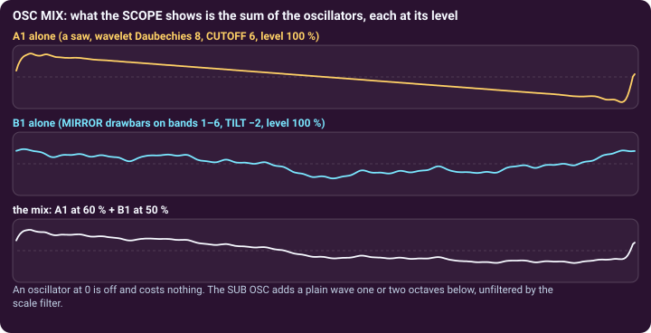

Additive synthesis with wavelets · page 3 of 3 · oscillator B1
Playing B1 with the others
B1 rarely plays alone. Mixed with the subtractive oscillators it adds a layer that you built by hand, band by band.
One mix for three oscillators
The OSC MIX card sets the level of A1, A2 and B1 with the knobs OS1, OS2 and OS3, named as the tabs; the SCOPE shows their sum. A fresh patch plays A1 only: raise OS3 to hear B1. An oscillator at 0 is off and costs no computing time. The SUB OSC (LEVEL, OCT two octaves down, one octave down, the same pitch or one octave up, SHAPE sine, triangle or square) adds a plain wave under everything; it does not go through the scale filters.

VINTAGE (plug-in)
In the plug-in the card is titled MIX and VINTAGE. AMOUNT ages the instrument like an analog polyphonic synthesizer of the 70s and 80s: each voice is a little out of tune in its own way and pulled at each note, the pitch drifts slowly and wobbles (a wow), the tone gets darker and warmer, the filters and levels of the voices differ a little, and the oscillators start anywhere in their cycle. At 0 % the sound is exactly the clean one. TYPE chooses the kind of age: FIX the fixed differences between the voices only (nothing moves), BOTH (the default) or DRIFT the moving drift only. Both are playing settings, like VELOCITY: they stay when you change preset and are kept with your project, not in the presets. The browser version does not have them.
Tune it, shorten it, bend it
B1 has its own OSC PITCH · VOLUME ADSR card, exactly as the subtractive oscillators (Subtractive 3). A classic use: A1 plays the attack (a short ENVELOPE, or a noise), B1 plays the body (an octave down, with its bars and band envelopes). Two oscillators one octave apart, or a few cents apart, thicken a sound before the unison does.
Chords and quarter tones
B1 follows the keyboard like the others. In CHORD MODE one finger plays a whole chord, which suits organs and choirs. The TUNING switch (WEST · ARAB · TURK) gives the keyboard 24 or 53 steps to the octave; every oscillator, B1 included, plays them. See Playing on the contents page.
Three recipes
| B · Flute Lead | B1 alone, RAMP, Daubechies 20. Only bars 1 to 3 (1, 0.3, 0.1), bars 4 to 11 at 0, TILT −8: a pure, hollow tone. An ENVELOPE ATTACK of 0.06 s, sustain 90 %, and a vibrato from LFO 1 at 5 Hz. |
|---|---|
| B · Choir Pad | B1 alone, MIRROR, Daubechies 20, TILT −5, bars 1 to 7 up (between 0.1 and 1), bars 8 to 11 at 0. ATTACK 1 s with SPREAD +0.5: the fine bands arrive after the low ones, as a vowel opens. UNISON 3, chorus and reverb. |
| AB · Open Mallets | A1 is a noise with a very short ENVELOPE: the strike. B1 uses the IMPULSE pattern, bars falling from band 2 to band 9, TILT −4.8, a 12 ms ATTACK, sustain 0 with a 3.9 s decay: the ring. A1 has a BAND-PASS and B1 a LOW-PASS, both opened by the TONE ENVELOPE (ENV AMT +3 to +4 bands). |
Try it. Load B · Choir Pad, raise OS1 (A1) in OSC MIX and give A1 a very short ENVELOPE: a soft breath of attack in front of the choir. Then change the PATTERN of B1 while you hold a chord.